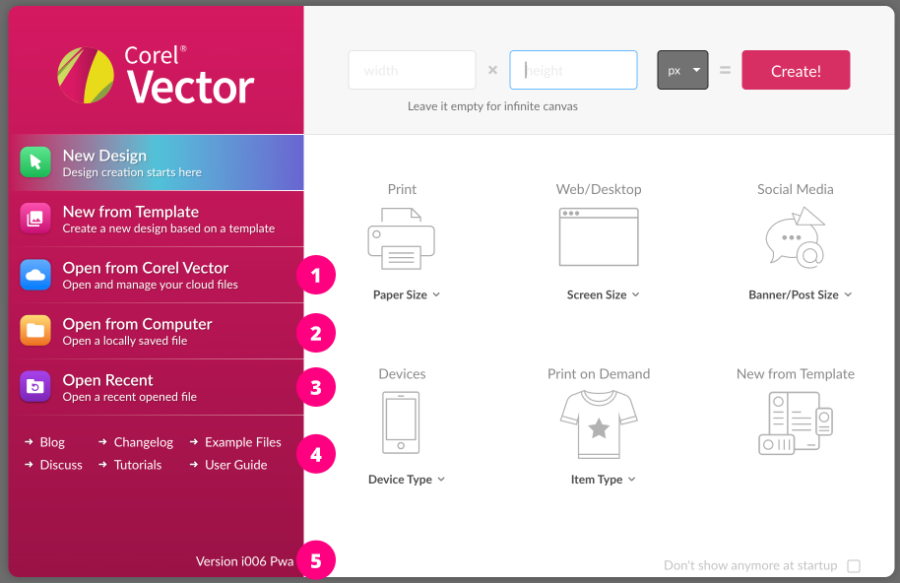
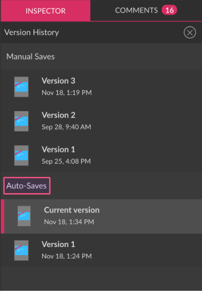
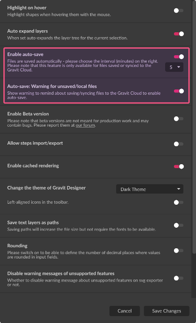
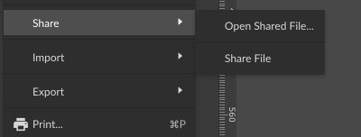
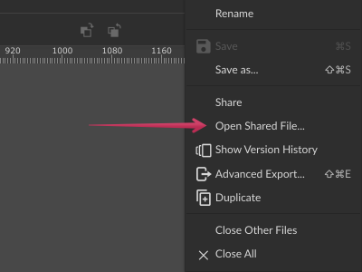

Open
You can open files saved to your Gravit Designer Cloud account, as well as files stored locally.
To open a locally saved file, click or Open from Computer (2) tab in the Welcome screen.

To open files saved to Gravit Designer Cloud, click or click Open from Gravit Designer (1) in the Welcome screen.
The Open Recent (3) option lists recently edited project files. This includes both files stored locally and in your Gravit Designer Cloud account.
Save

To save your designs, click , or press + .
If your file isn’t already saved, the desktop version of Gravit Designer prompts you to save your file locally or to Gravit Designer Cloud, If you use the web version of Gravit Designer, the file is saved directly in your Gravit Designer Cloud storage.

- If you save to the cloud, you can access your designs at any time from different devices.
- If you save locally, Gravit Designer prompts you to choose a local folder where the file will be saved. The file will be saved as File Name.gvdesign.
- Starting in Gravit Designer version 2020-1.3.1, saving files is asynchronous. You can now continue working during the saving process, but the changes made after clicking the Save button aren’t saved.
Alternatively, you can use any of the following commands found in the File menu:
The native file format of Gravit Designer is .gvdesign. Using this format ensures the best fidelity for your design. Gravit Designer is the only application reads this format, which can be used to share your file with other Gravit Designer users.
If you want to use another file format that is supported in Gravit Designer you must use an Export function.
Since version 3.5, Gravit Designer has a Version History that saves the last 20 iterations of a file in the Gravit Designer Cloud.
If you have not made any changes to your project since the last save, the Save icon will not be active.

If you have made changes that haven’t been saved, you will see an asterisk (*) beside the filename in the project tabs (1) at the top of the window.
If you haven’t saved your project, the tab will show as Untitled (2).
To save the current project to a different location or to a different file name, click (desktop apps), or (web app).
Auto-save
Gravit Designer automatically saves your progress every 5 minutes for files stored or synched to the cloud. Every auto-save creates a new entry in the file’s Version History list, in addition to iterations created by manual saving.

To configure Auto-Save, click . You can change the Auto-save interval or disable it, and also disable the warning for unsaved/local files.

Open shared files
You can open multiple files that are shared with you by using the Open Shared File command from menu:

or from the contextual menu from the file’s tab at the top-right:

This opens a pop-up window where you can paste the path to the shared file.
When you click the Open button, the shared file opens in a new tab inside the same instance of Gravit Designer. Learn more about file sharing and collaboration here.